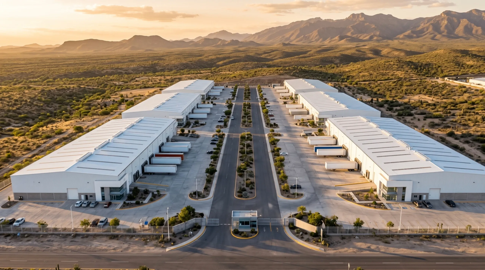

Renta
RentaNaves listas para operar
Naves terminadas o en obra dentro de nuestros parques, con contrato de arrendamiento y entrega lista para instalar tu operación.
Preguntar por naves en rentaUna sola empresa responde por el terreno, el proyecto, la obra y el inmueble.
Somos inmobiliaria, desarrolladora y constructora. Puedes ocupar una nave nuestra, comprarla o encargarnos la tuya.
¿No sabes cuál te conviene? Cuéntanos tu operación y te decimos qué opción encaja.
CotizarImágenes ilustrativas


Así empieza: un terreno nivelado y viento. Sigue bajando y mira cómo se levanta una nave completa, pieza por pieza.
Despalme, cortes y rellenos compactados por capas. Las terracerías dejan la plataforma a nivel antes de colar un solo metro de concreto.
Sobre la plataforma se cuelan las zapatas, la losa y el patio de maniobras. Las columnas de acero se anclan a sus placas base y reciben las armaduras.
Así se ve por dentro, con medidas de referencia del mercado. Cada pieza se fabrica a medida antes de montarse.
Las armaduras y los largueros bajan sobre las columnas y fijan el claro y la altura libre. Los paneles cierran las cuatro fachadas alrededor de los andenes.
Al final baja la lámina engargolada, con su aislamiento y sus franjas translúcidas, y la nave queda cerrada y protegida del clima.
Así la entregamos: completa, probada y con su patio de maniobras, lista para instalar tu operación.
Imagen ilustrativa

Desarrollamos parques completos: terreno con uso de suelo industrial, urbanización, redes de servicios y naves.
Imagen ilustrativa
Caseta de vigilancia, barda perimetral y un solo punto de entrada y salida, con carriles separados para carga y para personal. Sobre la carretera, carriles de aceleración y desaceleración.
Vialidades de concreto para tractocamiones, con guarniciones, banquetas y alumbrado. Debajo van las redes de agua, drenaje, energía en media tensión y telecomunicaciones.
Cada nave tiene su patio de concreto para maniobrar tractocamiones y andenes con rampa niveladora, sello, topes y retenedor.
Naves de inventario listas para ocupar y lotes para naves a la medida. Cada lote deja libres sus restricciones al frente y a los lados, su área verde y su estacionamiento.
Oficinas integradas a cada nave, con acceso y estacionamiento separados del tránsito de carga. El parque tiene reglamento interno y administración para las áreas comunes.


Terreno y factibilidad. Revisamos uso de suelo, mecánica de suelos, topografía y factibilidades de agua, drenaje y energía antes de comprometer el proyecto.
Proyecto arquitectónico, estructural y de instalaciones: claros, altura libre, andenes, cargas de piso y energía, a partir de cómo va a trabajar tu operación.
Uso de suelo, impacto ambiental, impacto vial, Protección Civil y licencia de construcción con Director Responsable de Obra: gestionamos lo que pida cada municipio antes de arrancar.
Terracerías y plataformas, cimentación, montaje de la estructura, cubierta engargolada, muros, piso industrial, instalaciones, red contra incendio y urbanización.
Pruebas de instalaciones, terminación de obra y entrega de la nave lista para instalar equipo y empezar a operar.
El terreno, la estructura de acero y la nave terminada, vistos desde el mismo punto. Arrastra los cortes o elige un tiempo.
Imágenes ilustrativas
Si la tuya no está aquí, escríbenos y la resolvemos.
Es una nave que se proyecta y se construye para una empresa en particular. La superficie, la altura libre, los andenes, la energía y las oficinas salen de su operación. A cambio suele firmarse un contrato de mayor plazo que en una nave ya construida.
Es la que se construye antes de tener inquilino, con especificaciones estándar de mercado, para entregarla en poco tiempo. Las adecuaciones que necesite cada inquilino se acuerdan aparte.
Por metro cuadrado al mes. Además de la renta suelen pagarse predial, seguro y mantenimiento, y el contrato es de varios años con un ajuste anual. Las condiciones de cada nave te las confirmamos al cotizar.
El giro de tu operación, superficie, altura libre, número de andenes y rampas, energía eléctrica en kVA, ciudad o zona, fecha de ocupación y plazo. Con eso sabemos si te sirve una nave disponible o conviene construir.
Depende de cuántos camiones recibes y despachas por turno: una nave logística necesita más que una de manufactura. Lo definimos contigo y dejamos preparaciones en el muro para abrir más puertas después.
Depende del tamaño, del terreno y, sobre todo, de los permisos y de la energía eléctrica. El plazo de tu proyecto se fija en el programa de obra.
Cambian en cada municipio. Lo habitual: dictamen de uso de suelo, factibilidades de agua, drenaje y energía, autorización de impacto ambiental, dictamen de impacto vial, visto bueno de Protección Civil y licencia de construcción con un Director Responsable de Obra. Antes del proyecto se hacen los estudios de mecánica de suelos, topografía e hidrología; al final se tramita la terminación de obra.
La norma mexicana NMX-R-046-SCFI-2015 lo define: título de propiedad, autorización de impacto ambiental, proyecto ejecutivo, reglamento interno y administración permanente; vialidades pavimentadas, alumbrado y señalización; y redes de agua, drenaje, energía en media tensión y telecomunicaciones con dotaciones mínimas por hectárea.
Con la superficie aproximada y el uso que le darás podemos decirte qué hay disponible o preparar una cotización de construcción.
 Parques
Parques